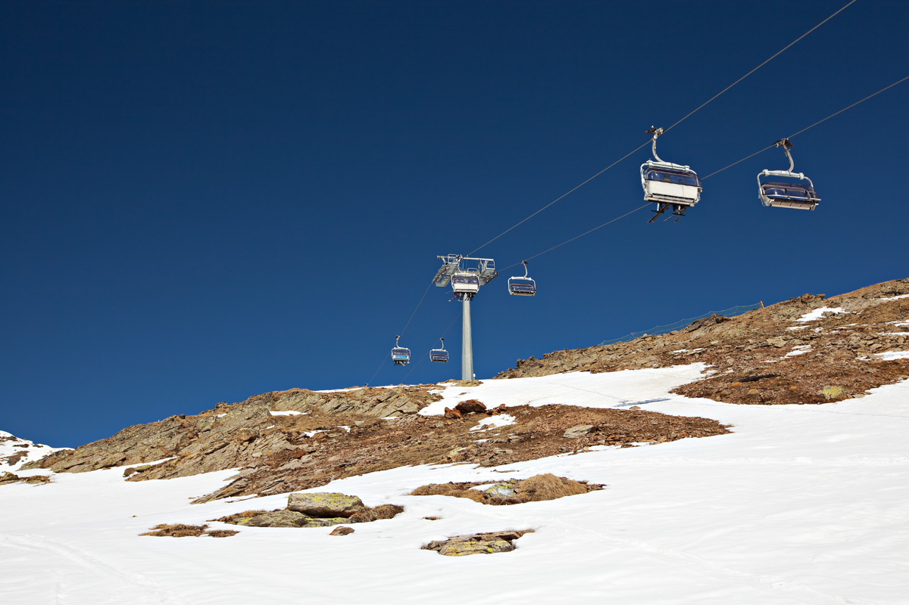

For communities from Mammoth, California to Morzine, France, winter means snow. And snow means life. Because with snow come the crowds that mean not just skiers plunging down the mountain, but guests in hotels, diners in restaurants, customers in grocery stores (and on and on).
No surprise then, that for winter sports communities, the rising temperatures that come with climate change isn’t just an inconvenience or reason to take your jacket off. They’re an existential threat. Because when the winter warms and snow becomes less and less reliable or simply disappears, so too can the crowds.
With one study projecting warmer weather could mean ski seasons shrink by as much as 50 percent by 2050, more and more mountain towns synonymous with skiing and winter sports are increasingly looking ahead and asking one simple question: What will we do?
As any child will tell you, if it’s warm outside, it can’t snow. With January 2020 the warmest January on record, snow has been in short supply in many European ski resorts. To be able to stay open, many have turned to artificial snow production.While more than 60 percent of the world’s ski resorts now rely on this method to keep their slopes usable – this stopgap to resorts running around the world complicates business. Artificial snow production requires below-freezing temperatures to have ideal conditions to make snow, but this equipment also requires costly and excessive water and energy resources.
These unpredictable and warming winters, along with the expense of maintaining slopes with other methods, means it’s increasingly difficult for these locations around the world to rely on a steady stream of income that only comes during the winter. If global greenhouse gas emissions continue to rise at the same pace as they currently are, the Climate Impact Lab estimates that sub-freezing days at ski resorts could be cut in half.
The climate crisis isn’t just taking a toll on your favorite winter sports, but those who rely on them for a living income. Around the world, ski resorts and businesses are struggling to stay open, even filing for bankruptcy.
The winter sports industry contributes more than $20 billion every year in just the US. Many local economies rely heavily on the winter season to make their yearly profits. From the Alps to New Hampshire, cities around the world are shutting down businesses that locals rely on.
A report from Protect Our Winters shows that in recent low-snow years, lower than average precipitation levels cut value the US ski industry adds to the overall economy by over $1 billion and cost 17,400 jobs compared to an average ski season. Unless ski resorts are able to adapt, some will have to close their doors entirely.
With only about half of the more than 100 ski resorts in Northeastern US able to remain economically viable to stay open through mid-century, action is needed now to protect winter sports and local economies.
Decreasing snowfall affects more than just winter sports. It has consequences for the snow cover that is not only crucial in helping to regulate the Earth’s temperature but is also an essential source of water across the world.
Each year, former US Vice President Al Gore and Climate Reality train thousands of new leaders to communicate the urgency of the climate crisis and fight for the change we need at this crucial moment. In 2020, we’re hosting trainings in three different cities in the US.
Bring your courage, commitment, and passion. Leave with the knowledge and tools to inspire climate action in your community and lead the global fight for solutions to the climate crisis. Apply to become a Climate Reality Leader today.